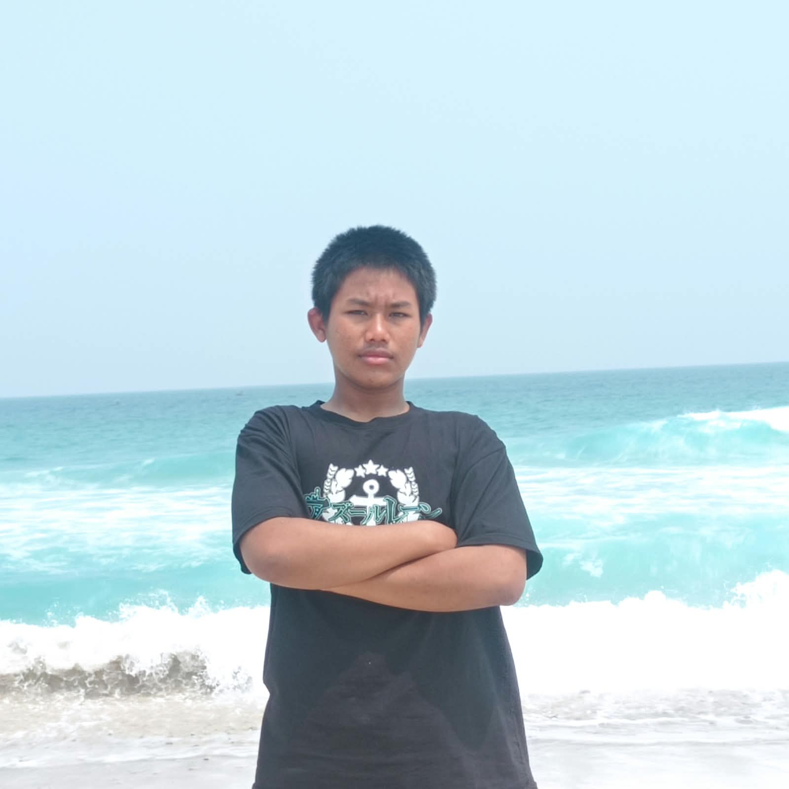

Profil 01 — Ahmad Al Khudaifi
- TTL: Pasuruan, 08 Desember 2010
- Hobi: Sepak Bola
- Cita-cita: Masinis
Lihat riwayat
Pendidikan: SDN ---, SMPN ---
Keahlian: Sholat
Buku digital profil siswa
| Wali Kelas | Bapak Ahmad Fauzi, S.Kom. |
|---|---|
| Ketua Kelas | M. Bilal Akbar |
| Jumlah Siswa | 36 Siswa |
| Slogan | "Code Your Dream, Build Your Future" |
Pendidikan: SDN ---, SMPN ---
Keahlian: Sholat

Pendidikan: SDN ---, SMPN ---
Keahlian: Cyber Security

Pendidikan: SDN ---, MTS AL ISLA
Keahlian: Dasar HTML

Pendidikan: SD DERMO 01, MTSN 1 PASURUAN
Keahlian: Kegiatan Yang Positif

Pendidikan: SDN KEPULUNGAN 1, SMPN 02 Gempol
Keahlian: Alight Motion, Figma, VS Code